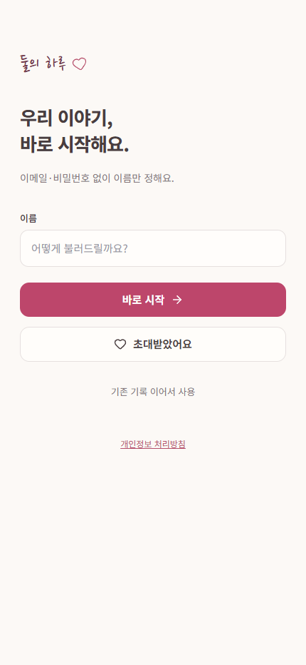

둘이 공유할 순간을 날짜·사진·짧은 이야기·장소 단위로 남기고 다시 찾는 모바일 기록 앱입니다. 기록, 이야기, 달력, 추억 지도 흐름을 나누어 한 화면에 많은 정보를 밀어 넣지 않도록 구성했습니다.
둘의 하루
프로젝트 소개
기록 흐름
- 시작 — 이름을 정한 뒤 기록 흐름으로 바로 이동
- 기록 — 날짜, 사진, 제목, 이야기, 장소를 한 기록에 묶는 입력 화면
- 탐색 — 이야기·달력·추억 지도에서 남긴 기록을 다시 찾는 구조
- 우리 — 둘이 함께 보는 공간을 별도 하단 탭으로 분리
실제 화면
